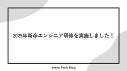

every Tech Blog
https://tech.every.tv/
株式会社エブリーのTech Blogです。
フィード
レシピ材料の同義語辞書自動化に挑戦 with LLM
every Tech Blog
開発本部のデータ&AIチームでデータサイエンティストをしている古濵です。 今回は、挑戦WEEKで実装した「レシピ材料の同義語辞書自動化」をLLMで実装した内容をまとめます。 挑戦WEEKに関しては、以下の記事をご覧ください。 tech.every.tv 背景 ユーザーのクエリによって、同じ意味を表す言葉でも異なる単語が使われることがあります。 デリッシュキッチンを題材に例を挙げると「鶏もも肉」「とりもも肉」「鳥もも肉」などです。 これらの単語同士を同義語（シノニム）、これらの同義語を対応づけたものを同義語辞書と呼びます。 デリッシュキッチンの検索機能では同義語辞書を人手で作成して対応しています…
1日前

2025年新卒エンジニア研修を実施しました！ 1
1
every Tech Blog
こんにちは。トモニテ開発部ソフトウェアエンジニア兼、CTO室Dev Enableグループの庄司です。本記事では、2024年度から実施を始め、第2回目となる2025年新卒エンジニア向け研修の取り組みについてご紹介します。
3日前
デリッシュキッチンの Android アプリの起動時間を半分にした話
every Tech Blog
はじめに こんにちは、デリッシュキッチンでクライアントエンジニアを担当している kikuchi です。 デリッシュキッチンの Android アプリ開発チームでは新規機能の開発だけでなく、日々アプリの改善のために不具合の修正や挙動の改善についても力を入れており、アプリのパフォーマンスの部分など細かい部分も数値が改善されているかシビアに計測データで確認しています。 今回はそのパフォーマンスの部分で 「アプリの起動時間の改善」 の観点で特に効果が高かった対応をまとめてみたいと思います。 アプリの起動時間を確認する方法 アプリ起動時間は以下で調べることが出来ます。 Google Play Conso…
5日前

Cursor Custom modes を利用した cursor-memory-bank のワークフローを試してみる
every Tech Blog
はじめに こんにちは。リテールハブ開発部の池です。 エブリーは 2025/05/02 にプレスリリースを出した通り Cursor を全エンジニアとプロダクトマネージャーに導入し、AI活用による生産性の向上に積極的に取り組んでいます。 corp.every.tv 現在、世の中では Cursor のような開発支援ツールを使ってLLMをベースとしたエージェントの開発ワークフローを構築する動きが進んでいます。 エージェントに安定した挙動をさせるには、一貫したコンテキストの提供が必要であり、永続的なルールやファイルを用いてその振る舞いを制御するアプローチが一般的になりつつあります。 これには単なるドキュ…
8日前
Amazon CloudWatch Logs Insights を使ったログ調査〜最新機能を添えて
every Tech Blog
Amazon CloudWatch Logs Insights を使ったログ調査〜2025最新機能を添えて
9日前
Amazon QuickSightでハイライトできるランキング表を作成する
every Tech Blog
はじめに こんにちは、開発本部のデータ＆AIチームの蜜澤です。 Amazon QuickSight(以下quicksight)にはハイライト機能がありますが、インタラクティブにランキング表の指定したワードにハイライトすることはできません。 本記事ではquicksightのハイライト機能を使用せずに、ランキング表の同じワードにハイライトする方法を紹介したいと思います。 本記事はquicksightの機能を一通り知っている方向けの内容になっています。 使用するデータ 今回使用するデータは、レシピ動画サービスの検索データを集計して作成した「にんじんと一緒に検索された回数が多いワードの年度ごと(202…
12日前
ADR始めました
every Tech Blog
はじめに 背景 ADRについて ADRの始め方 ADRの実践例 ADRの具体例 おわりに はじめに デリッシュキッチンのiOSアプリ開発を担当している池田です。今回はiOSチームでADR（Architecture Decision Record）を用いてチームの意思決定の記録を残し始めた話をします。正確には個人でADRを記録していたものの、チームでの運用はしていなかったため、この機会にチームでの管理を開始しました。 背景 デリッシュキッチンのiOS開発は当初少人数で行っていたため、実装に関する詳細なドキュメントを作成するという習慣がありませんでした。しかし近年、メンバーの入れ替わりや新入社員の…
16日前
CursorとFigma-Context-MCPを使ってLPの開発効率を上げる
every Tech Blog
はじめに こんにちは。デリッシュキッチン開発部の村上です。 弊社ではエンジニアとPdM全員にCursorを配布しており、生成AIを活用した開発を積極的に行っています。 prtimes.jp エンジニア組織では開発生産性10倍を目標としていますが、そこに到達するためには新しい技術やツールに触れながら、 ある意味でこれまでの開発のやり方を根底から疑ってみて、生成AIの活用を前提とした新しい組織・業務設計をしていく大胆さが求められていきます。 そんな中で、私の所属する組織ではちょうどLPの開発について考える機会がありました。 LPはそこまで複雑な機能はなく、基本的にはデザインに基づいたコーディングが…
19日前
iOS版デリッシュキッチンにウィジェット機能を追加しました
every Tech Blog
はじめに こんにちは。開発部でiOSエンジニアをしている野口です。 今回は挑戦WEEKにてiOS版デリッシュキッチンにウィジェット機能を実装した際の実装方法や、実装中に直面した課題とその解決方法についてお話しします。（※本記事ではiOS版について解説しますが、Android版にも同様の機能を追加しています） 弊社の挑戦WEEKの取り組みについては以下の記事をご覧ください！ tech.every.tv ウィジェットについては以前まとめている記事があるので以下の記事もご覧ください！ tech.every.tv 今回実装したウィジェットについて 今回実装したウィジェットの要件はこちらです。以下をゴー…
23日前
Amazon Q in QuickSight で実現する自然言語データ分析
every Tech Blog
データ&AIチームでデータエンジニアを担当している塚田です。 はじめに エブリーではデータ基板の活用の方法としてRedashとAmazon QuickSightを利用しています。 ビジネス職でもSQLを使ったデータ取得・分析は一定程度できる状況ではありますが、まだまだ利用するにあたって壁があることも事実です。 今回、Amazon QuickSightに搭載されている生成AIアシスタントである Amazon Q に新機能『シナリオ分析』がGAされました。 本記事では、このAmazon Q in QuickSightのシナリオ分析機能にフォーカスし、弊社サービスのデリッシュキッチンの検索データを例…
25日前
`sealed` Class を使った実践 Flutter アプリのリファクタリング
every Tech Blog
sealed Class とは ディープリンクの制御を sealed Class を利用してリファクタリングしてみる リファクタリング前のコード リファクタリングの内容 使用例 責務を分離することにより得られた恩恵 sealed Class により得られる恩恵 終わりに エブリーで小売業界向き合いの開発を行っている @kosukeohmura です。私は普段はバックエンドの開発を行っていますが、数ヶ月ほど前から Flutter アプリの開発にも従事しております。エブリーではここ数年いくつかの Flutter アプリを開発／運用しています。 今回は Flutter アプリに機能追加する中で、se…
1ヶ月前
Serverless Framework で作成した Lambda 関数を lambroll に移行できるのか調査しました
every Tech Blog
はじめに こんにちは！トモニテで開発を行っている吉田です。 今回は Serverless Framework で作成した Lambda 関数を lambroll に移行しようとしたことについて書きます！ 移行検討の背景 昨年、Serverless Framework の v4 がリリースされました。 v4 からはライセンス形態が変更されて、収益の閾値を満たす、あるいは超える組織では有料でサブスクリプションを購入する必要があります。また v3 は 2024 年までのサポートで、クリティカルなセキュリティ問題やバグにしか対応しません。 他にもランタイムのアップデートにも対応していないため、今は大丈…
1ヶ月前
ヘルシカ Android のモジュール化戦略
every Tech Blog
はじめに ヘルシカについて モジュール化の利点 アーキテクチャと関心の分離の徹底 ビルド時間の短縮 テストの容易性 ヘルシカ Android アプリ既存のモジュール化戦略 既存のモジュール化戦略の問題点 改善後のモジュール化戦略 モジュールの分類 既存モジュールの命名変更 feature モジュールの新設 まとめ はじめに Android 開発エンジニアを担当している岡田です。 サービスの成長に伴い、コードの肥大化・複雑化は避けられないものだと思います。 しかしながらサービスの成長角度を下げないためには、持続可能で保守性の高いコードを保つ必要があります。 今回は弊社のサービスであるヘルシカにて…
1ヶ月前
技術力向上と組織活性化を促進する挑戦WEEKの効果を振り返る
every Tech Blog
目次 はじめに 前提 挑戦WEEK とは 実施にあたって気をつけていること 施策の流れ 実際に行われたもの 得られた効果 今見えている問題 まとめ 最後に はじめに こんにちは、トモニテ開発部ソフトウェアエンジニア兼、CTO 室 Dev Enable グループの rymiyamoto です。 ４月で社会人 9 年目に突入し、もう若手とは言えない年齢になっており驚きを隠せません。 今回は弊社での組織活性施策の一環として行っている 挑戦WEEK の効果の振り返りを行います。 社内外からこの取り組みに伴う効果を聞かれることが多くなってきたので、実施した内容や効果を振り返ることで、今後の施策に活かせれ…
1ヶ月前
デリッシュキッチンにおけるElasticsearchからOpenSearchへの移行検討
every Tech Blog
はじめに こんにちは、デリッシュキッチン開発部でソフトウェアエンジニアをしている新谷です。 エブリーの開発部では「挑戦week」という1週間の期間限定チャレンジを定期的に開催しています。これは日常業務から離れて、新しい技術やアイデアに挑戦する取り組みです。 今回は、この挑戦week期間中にデリッシュキッチンの検索基盤をElasticsearchからOpenSearchへ移行する挑戦を行いましたので、その内容を紹介します。 ※ 挑戦weekの詳細については過去の記事で紹介していますので、興味のある方は以下をご覧ください。 tech.every.tv 背景：なぜElasticsearchの移行が必…
1ヶ月前
Makefile を MCP サーバー化してちょっとだけ開発効率を上げる
every Tech Blog
はじめに 株式会社エブリーでCTOをしている imakei です。 本日から弊社では多くの新卒メンバーに入社していただきました。 これから彼ら・彼女らとともにより強い開発組織を作っていきたいと思います。 すでに新卒メンバーからは学ぶことも多く、特にAIに関しては自分以上に使いこなしているところを数多くみています。 そんな彼らに感化された部分もあり、生成AIを使いながら開発していく上でのちょっとしたTipsを紹介できればと思います。 弊社では今積極的に生成AIを活用した開発を行っています。 AIAgentを利用した開発も積極的に試しているのですが、そんな中で、 なかなか思っているコマンドを実行し…
2ヶ月前
データサイエンティストチームにおける数学輪読勉強会の取り組み紹介
every Tech Blog
はじめに エブリーでデータサイエンティストをしている山西です。 今回は、社内で継続的に実施している数学勉強会について紹介します。 勉強会を続けるうえで工夫したポイントや、取り組みを続けての所感をお伝えします。 概要 エブリーのデータ&AIチームでは、「数式に向き合う習慣を維持する」目的で週に1回のペースで数学の勉強会を実施しています。 記事執筆時点では、データサイエンティスト（MLエンジニアを含む）3名で、『機械学習スタートアップシリーズ ベイズ推論による機械学習入門』を輪読形式で進めています※ www.kspub.co.jp 勉強会の進め方は、各回で担当メンバーが前回の続きから読み進め、数式…
2ヶ月前
Biomeではじめる快適な開発環境 〜設定不要の高速Linter＆Formatter〜
every Tech Blog
はじめに Biomeとは 導入方法 使い方 lint format check 設定ファイル 複数の設定ファイル extends vcs まとめ はじめに こんにちは、TIMELINE 開発部 Service Development をしているhondです！ 普段からLinterやFormatterにはとてもお世話になっているのですが、いざ導入するとなると細かい設定などめんどくさいな、と友人に相談したらほぼ設定いらずかつ爆速なBiomeというツールを教えてもらったので触ってみた感想について紹介しようと思います！ Biomeとは Web開発のためのたった1つのツールチェーン フォーマット、リント…
2ヶ月前
【Golang】 sqlboiler で複雑なリレーションを扱うために頑張った話
every Tech Blog
こんにちは。トモニテ開発部ソフトウェアエンジニア兼、CTO室Dev Enableグループの庄司([ktanonymous](https://github.com/ktanonymous))です。"データベースファースト"な ORM ライブラリの `sqlboiler` を使う中で複雑なリレーションに対して有効に活用するために苦労した点について紹介したいと思います。
2ヶ月前
iOS ウィジェットのまとめ
every Tech Blog
iOSのウィジェットは、iOSのアップデートに伴い配置場所と機能が拡充されてきました。ウィジェットを開発する上で適切な技術を選択するための情報として、その変遷と各OSバージョンにおいて利用可能な機能を整理しました。 レガシーなウィジェット TodayExtension (iOS 8〜iOS 17) 初期のウィジェットは、ホーム画面ではなく、通知センター（ホーム画面を右にスワイプして表示される画面）に配置されていました。制約が比較的少なく、アプリに依存せずウィジェット内で機能を完結させることもできました。 iOS 14でWidgetKit が導入された後も引き続きサポートされていましたが、iOS…
2ヶ月前
“通信ブロックして大丈夫？”を解消！VPCフローログで通信内容を確認してみた
every Tech Blog
はじめに こんにちは。去年12月に入社したリテールハブ開発部エンジニアの清水です。 エブリーでは事業譲渡という形で他社が開発した小売店様向けシステムを引き継いで運用を行なっており、私は入社してからこちらのシステムの保守運用を担当しております。 このシステムはAWS上で稼働しており、数年間運用されているのですが、最近セキュリティ設定を変更して許可されていた通信をブロックする対応が必要となりました。 今回設定変更を行う通信は金銭に関わる処理が行われているため、必要な通信をブロックしてしまった場合大変なことになります。 このような状況ですので、どうすれば絶対に問題ないことを確認できるのか？ということ…
2ヶ月前
Android アプリでの正確なタイムスタンプの運用方法を考える
every Tech Blog
はじめに こんにちは、デリッシュキッチンでクライアントエンジニアを担当している kikuchi です。 近年は Web のサービスに限らず、アプリでもネットワーク接続を実施することが当たり前になってきていますが、皆さんはネットワーク接続をするアプリでは必須となる タイムスタンプ について実装方法や管理方法を意識されたことはあるでしょうか？ タイムスタンプを使用するケースは多く、例えば ログイン情報を保存する機能で、ログインを実施した日時を管理する ワンタイムパスワードを発行する機能で、発行された日時や有効期限を管理する スケジュールを管理する機能で、スケジュールが実行される日時を管理する (プ…
2ヶ月前
エブリーでの新卒1年目を振り返る
every Tech Blog
はじめに こんにちは、開発本部のデータ＆AIチームの24新卒の蜜澤です。 エブリーに入社してからもうすぐ1年が経つので、この1年間を振り返りたいと思います。 文字ばかりのポエムですが最後まで読んでいただけると嬉しいです！ 入社前 まず、入社する前の私の状況について触れたいと思います。 大学ではデータサイエンス学部に所属しており、主に統計学・機械学習について学んでいました。 いわゆるコンピューターサイエンスのようなことは学んだことはなく、Webやアプリの開発経験もなく、触れたことがある言語はR・Pythonの2つのみで、データサイエンティストにとって必須とも言えるSQLも触れたことがありませんで…
2ヶ月前
Laravel12のバージョンアップ変更点を見てみる
every Tech Blog
はじめに こんにちは、リテールハブ開発部でバックエンドエンジニアをしています。 現在、小売アプリの開発でLaravel11を利用してAPI開発を行っています。 先日2月24日にLaravel12がリリースされました。 （https://laravel.com/docs/12.x/releases） 今回のリリースは、比較的マイナー変更中心の「メンテナンスリリース」となっているようです。 Laravel11は昨年の夏頃から使用しているのですが、まだまだ最新バージョンの認識で直近でバージョンアップを行う予定もありませんでした。 ただ、以下のサポート対応表を見ると、Laravel11でもあと1年程度…
2ヶ月前
OOM-Killer (Out-Of-Memory Killer) について学ぶ
every Tech Blog
この記事の概要 エブリーTIMELINE開発部の内原です。 サービスを運用していると時々遭遇するOOM-Killerについて、改めて学んでみたのでまとめます。 OOM-Killerはどういう理由で発生するのか、なにが起きているのか、どう対処すればいいのか、などを解説します。 なおこの記事では、Linux上での説明を前提としています。 OOM-Killerとは サーバ上で、以下のようなメッセージを見たことがあるのではないでしょうか。 [ 2291.984774] oom-kill:constraint=CONSTRAINT_NONE,nodemask=(null),cpuset=/,mems_a…
2ヶ月前
FlutterからiOSエンジニアに転向しました
every Tech Blog
こんにちは。開発部でiOSエンジニアをしている野口です。 Flutterエンジニアをやっていましたが今年からiOSエンジニアに転向したので思っていることを書こうという記事になります。 なぜiOSに転向したのか Flutterをやっていると、外部のパッケージを入れる際にネイティブコード書かないといけないなどネイティブの知識を要求されるパターンがあり以前からネイティブに興味がありました。 そんな中で社内でiOSエンジニアのポジションが必要とされていたため、良いチャンスだと思い転向しました。 また、数年前まではクロスプラットフォームでFlutterがイケイケだと思っていましたが（日本においては）、 …
2ヶ月前
STG環境でSSO認証を行う
every Tech Blog
はじめに エブリーでデリッシュキッチンの開発をしている本丸です。 デリッシュキッチンのSTG環境のWEBへのアクセスには社内ユーザーからのみという制限があります。 先日、制限をかけるシステムに触れる機会があったので、今回はそのシステムについて紹介しようかと思います。 背景 先日、社外の方にSTG環境にアクセスしてもらうことがあったのですが、Google SSOの認証のページに飛ばされてしまって確認してもらうことができないということがありました。 エブリーではGoogle Workspaceを利用しており、Google WorkspaceのSSOを利用して業務アプリケーションにアクセスすることが…
3ヶ月前
BigQueryのストレージコストを削減するために実施したこと
every Tech Blog
データ&AIチームでデータエンジニアを担当している塚田です。 弊社のデータ基盤はさまざまなデータソースからデータを連携しており、そのデータを活用することで全社のデータ基盤として成り立っています。 その中で、Google Analytics for Firebaseの活用をベースにBigQueryのコストダウンした事例をご紹介できればと思います。 概要 改めて、弊社ではGoogle Analytics for Firebaseなど色々な基盤を用いてログを収集していいます。 今回はGoogle Analytics for Firebaseを用いたログの取得とその保存先であるBigQueryを利用し…
3ヶ月前